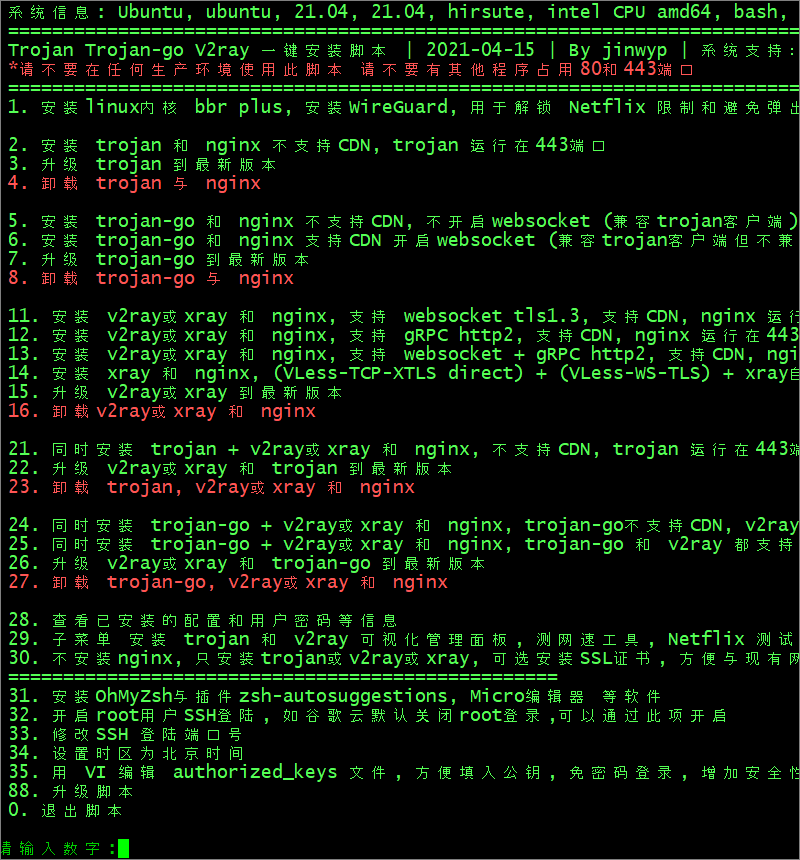

Quickly Set Up Trojan-Go
This quick set-up procedure for a Trojan-Go server has been tested on Ubuntu 21.04. It should also work for recent versions of Debian.
1. Server
You need a virtual private server (VPS) and a domain name, with a DNS A record pointing from the server’s fully qualified domain name to its IP
address.
SSH into your server as root.
As a preliminary step, download the script for acme.sh, which is a front end to Let’s Encrypt:
wget https://raw.githubusercontent.com/acmesh-official/acme.sh/master/acme.sh
Make the script executable:
chmod +x acme.sh
Use the script to specify your email address. Replace my@example.com in the example below by your actual email address:
./acme.sh --register-account -m my@example.com
Now for the main script. Download the one-click script from GitHub:
wget https://raw.githubusercontent.com/jinwyp/one_click_script/master/trojan_v2ray_install.sh
Make the script executable:
chmod +x trojan_v2ray_install.sh
Run the script.
./trojan_v2ray_install.sh
You will see the main menu:
Choose option 6 to install Trojan-Go.
After some initial installs, you are prompted to enter the fully qualified domain name of your server. CDN proxying should be turned off at this stage.
请输入绑定到本VPS的域名 例如www.xxx.com: (此步骤请关闭CDN后安装)
Enter your server’s fully qualified domain name.
Next, you are asked if you want to apply for a certificate. The default is to apply for a certificate automatically. If you have a second installation or an existing certificate, you can choose No.
是否申请证书? 默认为自动申请证书,如果二次安装或已有证书可以选否 请输入[Y/n]:
Answer y.
The script asks if you want it to check whether the IP pointed to by the fully qualified domain name is correct. If CDN proxying is turned on and it is inconvenient to turn it off, you can choose No here.
是否检测域名指向的IP正确 (默认检测，如果域名指向的IP不是本机器IP则无法继续. 如果已开启CDN不方便关闭可以选择否)
是否检测域名指向的IP正确? 请输入[Y/n]:
Enter y to check your DNS entry. The script then continues.
The default is to apply for a certificate through Letsencrypt.org. If the certificate application fails, for example, there are too many applications through Letsencrypt.org in a day, you can choose whether to apply through BuyPass.com.
默认通过Letsencrypt.org来申请证书, 如果证书申请失败, 例如一天内通过Letsencrypt.org申请次数过多, 可以选否通过BuyPass.com来申请.
是否通过Letsencrypt.org来申请证书? 默认直接回车为是, 选否则通过BuyPass.com来申请, 请输入[Y/n]:
Enter y to apply for your SSL certificate through Letsencrypt.org.
Next you are asked to enter a prefix for Trojan passwords. A number of random passwords and passwords with this prefix will be generated.
请输入trojan密码的前缀? (会生成若干随机密码和带有该前缀的密码)
Enter a prefix, e.g. qwerty.
At the end of the script’s run, your login details are displayed. They will look like this:
Trojan-go 小火箭 Shadowrocket 链接地址
trojan://123456abcd@fully.qualified.domain.name:443?peer=fully.qualified.domain.name&sni;=fully.qualified.domain.name&plugin;=obfs-local;obfs=websocket;obfs-host=fully.qualified.domain.name;obfs-uri=/12345678#fully.qualified.domain.name_trojan_go_ws
Copy these login details from your terminal emulator into a text editor on your PC such as Notepad.
Also identify the URL to download V2RayN, which is the Windows client. It will look like this:
1 Windows 客户端下载： http://fully.qualified.domain.name/download/aabbccdd112233445566/v2ray-windows.zip
2. Windows Client
Open a browser on your PC. Paste the client download URL into your browser address bar. Download the zip file.
Extract all files in the zip file.

Launch v2rayN.exe. Click on the icon in the system tray (bottom right of your desktop_ to bring up the V2RayN panel. Under Help, you can choose the
language English or Simplified Chinese.

Copy the generated trojan:// URL from the script’s output into your PC clipboard.
In V2RayN do Ctrl+v, or select Servers > Import bulk URL from clipboard.
Press Enter to start the connection. Look for connection messages in the box at the bottom of your V2RayN panel.
You can either specify system-wide proxying in Windows Settings, or you can specify proxying at the level of the individual browser. We will use the Firefox browser as our example.
Launch Firefox. From the hamburger menu, open Settings. Open the Network Settings. Configure Firefox like this:
- Select Manual proxy configuration
- SOCKS host
127.0.0.1 - Port
10808(note that this is the default in V2RayN, and not the common1080) - Select SOCKS v5
- Select Proxy DNS when using SOCKS v5
Click OK.
Now visit https://www.dnsleaktest.com in Firefox to check that your are using your remote proxy server and not your local PC to access the Internet.
At this stage, you can optionally turn on CDN proxying and re-test your server.
Updated 2021-06-14